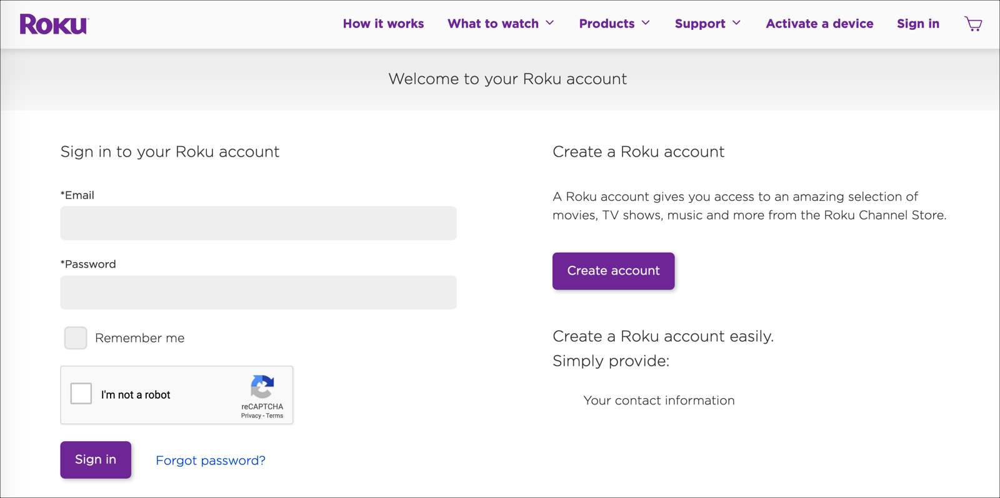
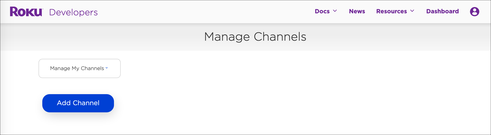
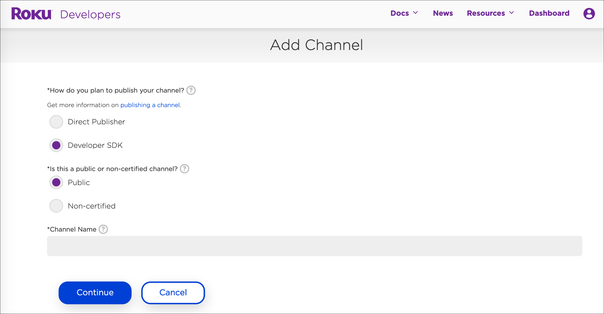
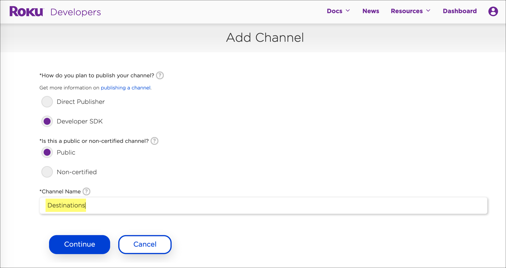
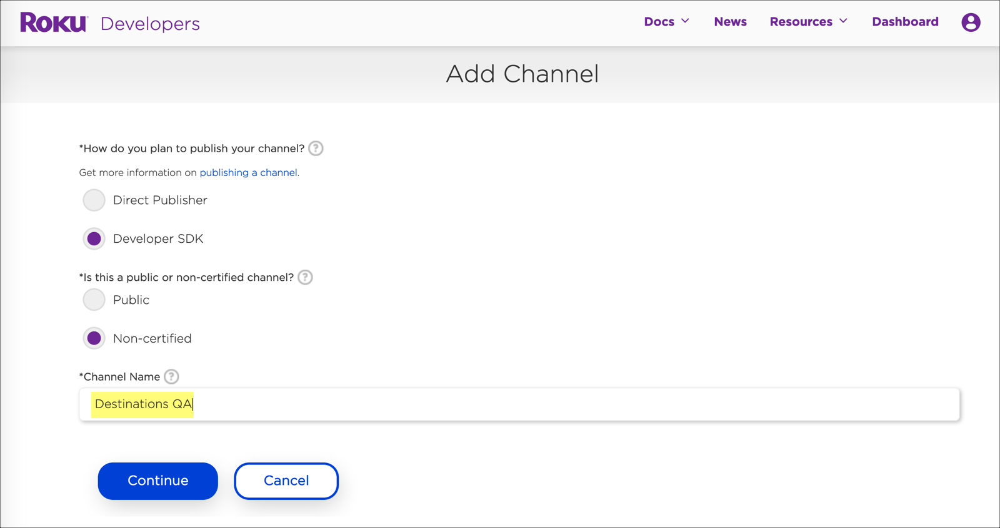

Introduction
The Brightcove Beacon page is where users will select and watch your video content. Carousels display a group of videos or playlists that you have defined in Video Cloud Studio. Using the Brightcove Beacon Administrative Console, you can add carousels to an existing page.
- Store details: https://developer.roku.com/overview
- Developer Account Setup: https://my.roku.com/signup
- Suggested lead time for approval: Three weeks
Required information for Roku:
-
Poster and screenshot requirements
- Channel Poster (540x405)
- Screenshots up to 1920x1080
- Developer Email
- Preferred URL for more information
- Administrative Contact (Name / Phone / Email)
- Technical Contact (Name / Phone / Email)
- Client to set up App logins for QA in store
Getting started
To add a carousel to an existing page, follow these steps:
-
In a browser, navigate to the Roku Sign in page.
 Roku sign in -
Either login with your account or create a new account.
Adding a channel
Learn how to manage chanels.
-
From the top navigation, select the Dashboard link.
-
From the dashboard, you can manage your channels. Select the Add Channel button.
 Manage Channels -
When the Developer SDK option is chosen, you will see options for a public or a non-certified channel.
 Developer SDK Channel -
Select Public when you want the channel to go to the store. Select Non-certified when you want to create a testing channel.
We recommend the following:
- Create your Public channel name, for example "Destinations".
-
Create a Non-certified testing channel with a suffix of "QA". So, in this case it would be named "Destinations QA".
First, we are creating the public channel.
 Public channel -
Next, we are creating the testing channel.
 Testing channel
Basic Data
The Basic Data section allows you to define the content and layout for your page.
| Field | Required | Notes |
|---|---|---|
| System Title | Yes | Internal name for your page |
| Order | Yes | Page order on your site |
| Level Type | Yes | Master or Child |
| Page Type | Yes | screen is a common type to use |
| Presentation Type | Yes | Icontext, Icon, Text |
| Screen Layout | Yes | Specify whether the layout is titled or not |
| Is it home? | No | Select if this is the home page |